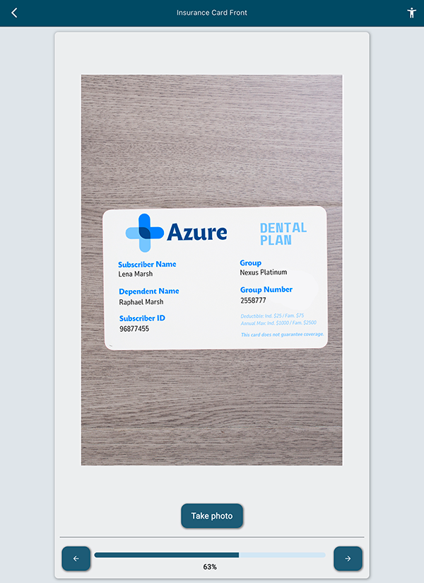
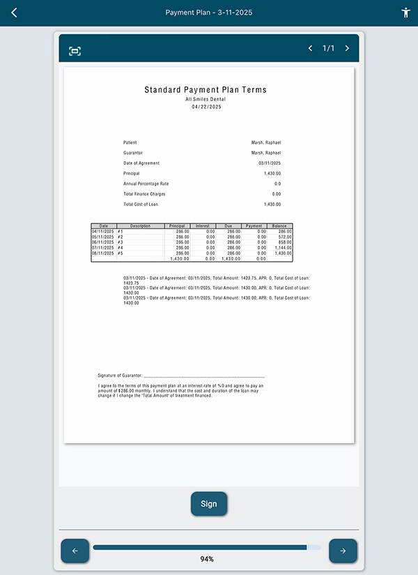
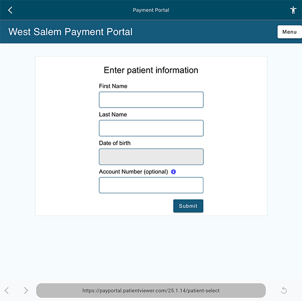

The eClipboard eService app can be launched on a Tablet device.
Patients can check in for appointments, fill out forms, and make payments using the app.
Alternatively, patients can use eClipboard Web which allows them to fill out items from a web browser. eClipboard Web is nearly identical to eClipboard 25.
The screenshots on this page reflect the eClipboard 25 app.
When a patient arrives for their appointment, they can check in.Their appointment status is automatically updated in the Appointments Module.

If the patient has an appointment scheduled for the day, they are shown a checklist of items to complete. This can include filling out specific forms, viewing their statement and making a payment, taking photos, and more.

Patients can fill out and sign forms consent, medical history, registration forms, and more using the eClipboard app.

For eClipboard 25 and eClipboard Web, forms can be set up and customized using Sheets or eForms. For eClipboard 24, forms can be set up and customized using Sheets only.
With eForms, you can set up conditional questions. This means that patients will only see questions applicable to them.
After forms are filled out, data can be imported into your database, saving valuable time for data entry.
The eClipboard app can prompt patients to take a patient photo (selfie) or ID and insurance cards.
Once the patient completes their check in, photos are autoamtically uploaded to the Imaging Module.
Saved Treatment Plans can be sent to the eClipboard app for patients to digitally sign.

Payment Plans can also be sent to the eClipboard app for patients to review terms and sign.
Easily send statement balances to eClipboard for the patient to make payments using the Payment Portal.
eClipboard 25 includes accessibility features to change text size and enable dark mode or high contrast mode.